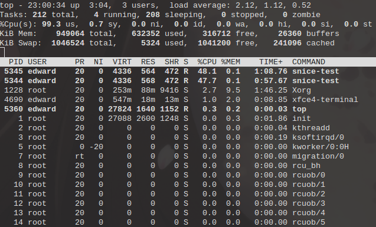
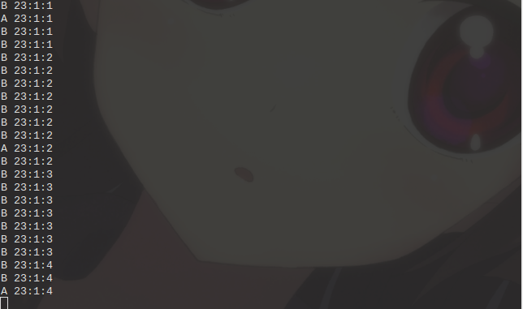
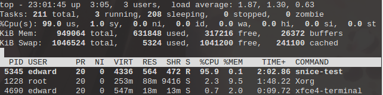
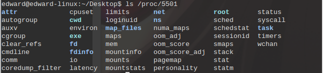
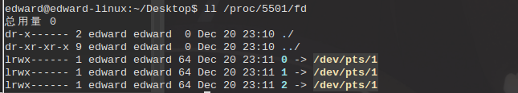
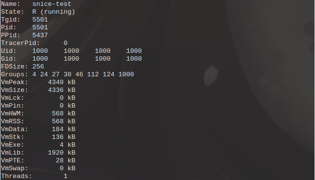
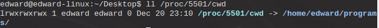
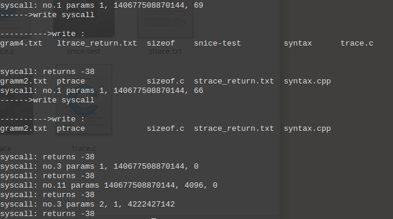

通过本实验了解并掌握Linux主要的进程管理命令
snice、skill、top等命令和/proc中有关目录、文件观察系统中进程运行情况和CPU工作情况。ptrace()、gdb跟踪一个进程运行情况，用strace工具跟踪fork()过程，用ltrace工具跟踪execl()过程。观察并分析跟踪信息。snice命令snice [new priority] [options] process selection criteria
用于调整某个进程的nice值（静态优先级），nice值的范围是-20~+19，值越大优先级越小。默认用户进程的nice值为20，使用snice命令若不加参数默认为较初始值+4。
skill命令skill [signal to send] [options] process selection criteria
用于向某个进程发送信号，默认发送TERM信号即终止信号。
top命令top -hv | -abcHimMsS -d delay -n iterations -p pid [, pid ...]
显示系统的实时状态，包括系统的当前的基本状况、正在运行的任务，以及各个任务的信息，同时还提供了简单的交互方式来获取更详细的信息。
首先，编写了一个简单的程序
// snice-test.c
#include <stdio.h>
#include <unistd.h>
#include <time.h>
void printTime() {
time_t timep;
struct tm *p_tm;
timep = time(NULL);
p_tm = localtime(&timep);
printf("%d:%d:%d\n", p_tm->tm_hour, p_tm->tm_min, p_tm->tm_sec);
}
int main(int argc, char *argv[])
{
int i;
while (1) {
printf("%s ", argv[1]); // 显示当前进程名
printTime(); // 显示系统当前时间
for (i = 0; i < 50000000; i++); // 忙等待一段时间
}
return 0;
}
同时运行两个该程序的实例
$ ./snice-test A
$ ./snice-test B
可以看到两个进程中显示的信息交替出现，可以推测出两个进程得到CPU时间大致相同。执行top命令，查看两个进程当前的优先级和CPU占用情况，
$ top

观察到两个进程目前的优先级均为20，CPU占用率大致相等。下面使用snice命令降低A进程的优先级。
$ snice +10 5344

观察到两个进程信息出现频率有了明显的差距，B进程显示信息的出现频率基本达到了A进程的10倍左右。再次执行top命令。
$ top
此时观察到A进程的优先级发生了变化，至30，其CPU占用率仅为9.3%。而B进程则达到了86.9%。说明优先级的变化确实影响了CPU对进程的调度。
执行skill命令结束一个进程
$ skill 5344

再次使用top命令发现A进程已经不再列表中，说明已经终止运行。
/proc 目录当一个用户进程运行时，在/proc目录下会建立以进程号命名的目录，以及在该目录下的一系列与该进程有关存有相应信息的文件和文件夹。

fd 目录中显示的是进程打开的文件链接。

status 文件中现实的是进程的基本信息。

cwd 是进程对应程序所在文件夹的软连接

其他文件和文件夹的内容参考 man 5 proc
ptrace()函数系统调用ptrace()可用于观察和控制其他进程的执行情况、查看和修改被跟踪进程运行时的寄存器和内存。主要用于实现断点Debug和系统调用跟踪。
long ptrace(enum __ptrace_request request, pid_t pid, void *addr, void *data);
第一个参数为PTRACE请求类型的编号，第二个参数为被跟踪进程的PID，第三个和第四个分别传入地址和数据，根据请求类型的不同有不同的使用方法。
Linux系统调用的参数通过寄存器来传递，对于x86-64架构，系统调用号存入
rax寄存器中，参数依次存入rdi，rsi，rdx，rcx，r8，r9寄存器中。Linux 的系统调用编号存储在
sys/syscall.h头文件中。write 系统调用共有三个参数，第一个为文件描述符，第二个为写入字符串的头指针，第三个为写入字符串的长度。
编写了下面一段程序
// ptrace-test.c
#include <stdio.h>
#include <stdlib.h>
#include <string.h>
#include <sys/ptrace.h>
#include <sys/types.h>
#include <sys/wait.h>
#include <unistd.h>
#include <sys/syscall.h>
#include <sys/user.h>
#define WORD_SIZE (sizeof(long))
union word {
unsigned long long int val;
char chars[WORD_SIZE];
};
typedef union word WORD; // WORD 类型用于获取从被跟踪进程中取出的1个字大小的内存数据
void getData(unsigned long begin, unsigned long length, char * str)
{
unsigned long i, length, j;
char * pos = str;
/* 一次拷贝一个字的数据 */
for (i = 0; i < length / WORD_SIZE; i++) {
w.val = ptrace(PTRACE_PEEKDATA, child, begin + i * WORD_SIZE, NULL);
memcpy(pos, w.chars, WORD_SIZE);
pos += WORD_SIZE;
}
/* 拷贝数据结尾不足一个字的数据 */
j = length % WORD_SIZE;
if (j) {
w.val = ptrace(PTRACE_PEEKDATA, child, begin + i * WORD_SIZE, NULL);
memcpy(pos, w.chars, j);
}
str[length] = '\0';
}
}
int main()
{
pid_t child; // 子进程编号
struct user_regs_struct regs;
child = fork(); // 创建子进程
int status;
int insyscall = 0;
unsigned long i, length, j;
unsigned long begin;
char * str = NULL, * pos = NULL;
WORD w;
if (child == 0) {
ptrace(PTRACE_TRACEME, 0, NULL, NULL); // 接受跟踪请求
execl("/bin/ls", "ls", NULL); // 执行 ls 命令
}
else {
while(1) {
// 等待子进程进行系统调用或结束
wait(&status);
// 如果进程处于结束状态则跳出循环
if(WIFEXITED(status)) {
break;
}
// 查询此时的寄存器的值
ptrace(PTRACE_GETREGS, child, NULL, ®s);
if (insyscall == 0) { // 如果当前是进入系统调用
insyscall = 1;
// 打印寄存器的值
printf("syscall: no.%llu params %llu, %llu, %llu\n",
regs.orig_rax, regs.rdi, regs.rsi, regs.rdx);
// 如果是 write 系统调用
if (regs.orig_rax == SYS_write) {
printf("------>write syscall\n");
length = regs.rdx;
begin = regs.rsi;
str = (char *)malloc(sizeof(char) * (length + 1));
/* 拷贝出被跟踪进程输出字符串的内存数据 */
getData(begin, length, str);
/* 将字符串打印出来 */
printf("\n------>write : \n%s \n\n", str);
}
}
else {
// 输出系统调用的返回值
printf("syscall: returns %lld\n", regs.rax);
insyscall = 0;
}
ptrace(PTRACE_SYSCALL, child, NULL, NULL);
}
}
return 0;
}
该程序创建了一个子进程，子进程执行ls命令，父进程使用ptrace()跟踪字进程执行。子进程每次进行系统调用，内核将控制权交给父进程，父进程调用ptrace()查看子进程当前寄存器的值，以获取当前系统调用的编号、参数和返回值，若是系统调用write，则使用PTRACE_PEEKDATA请求将子进程所在内存空间中要写入的字符串的内存数据拷贝至父进程的内存空间中，并输出字符串。

通过输出结果可以看出，打印出了子进程每次进行系统调用的系统调用号，参数列表和返回值，PTRACE_GETREGS请求被成功处理。看到父进程打印的结果与子进程一致，子进程的内存数据被成功拷贝到父进程中。
strace和ltrace命令strace命令strace命令用于中断和记录进程所进行的系统调用过程，包括系统调用类型、参数及返回值。
ltrace命令ltrace命令用于中断和记录进程的动态库调用过程，也可以中断和显示由该程序发起的系统调用（默认不显示）。
编写了如下程序
// trace.c
#include <stdio.h>
#include <stdlib.h>
#include <string.h>
#include <sys/ptrace.h>
#include <sys/types.h>
#include <sys/wait.h>
#include <unistd.h>
#include <sys/syscall.h>
#include <sys/user.h>
#define WORD_SIZE (sizeof(long))
union word {
unsigned long long int val;
char chars[WORD_SIZE];
};
typedef union word WORD;
int main()
{
pid_t child;
struct user_regs_struct regs;
child = fork();
if (child == 0) {
execl("/bin/ls", "ls", NULL);
}
else {
printf("child pid : %u\n", child);
wait(NULL);
printf("child process returned.\n");
}
return 0;
}
该程序创建了一个子进程，子进程执行ls命令，父进程打印子进程的PID，待子进程结束输出提示信息。
执行结果
$ ./trace
child pid : 3823
gdb gram4.txt ptrace snice.c syntax
gdb.c gramm2.txt ptrace.c snice-test syntax.cpp
gdb.txt grammar.txt sizeof strace_return.txt trace
gram3.txt ltrace_return.txt sizeof.c strace.txt trace.c
child process returned.
使用strace命令跟踪程序
$ strace ./trace
输出结果
execve("./trace", ["./trace"], [/* 68 vars */]) = 0
brk(0) = 0x11ce000
access("/etc/ld.so.nohwcap", F_OK) = -1 ENOENT (No such file or directory)
mmap(NULL, 8192, PROT_READ|PROT_WRITE, MAP_PRIVATE|MAP_ANONYMOUS, -1, 0) = 0x7fdb76961000
access("/etc/ld.so.preload", R_OK) = -1 ENOENT (No such file or directory)
open("/etc/ld.so.cache", O_RDONLY|O_CLOEXEC) = 3
fstat(3, {st_mode=S_IFREG|0644, st_size=118840, ...}) = 0
mmap(NULL, 118840, PROT_READ, MAP_PRIVATE, 3, 0) = 0x7fdb76943000
close(3) = 0
access("/etc/ld.so.nohwcap", F_OK) = -1 ENOENT (No such file or directory)
open("/lib/x86_64-linux-gnu/libc.so.6", O_RDONLY|O_CLOEXEC) = 3
read(3, "\177ELF\2\1\1\0\0\0\0\0\0\0\0\0\3\0>\0\1\0\0\0\360\36\2\0\0\0\0\0"..., 832) = 832
fstat(3, {st_mode=S_IFREG|0755, st_size=1853400, ...}) = 0
mmap(NULL, 3961912, PROT_READ|PROT_EXEC, MAP_PRIVATE|MAP_DENYWRITE, 3, 0) = 0x7fdb76379000
mprotect(0x7fdb76536000, 2097152, PROT_NONE) = 0
mmap(0x7fdb76736000, 24576, PROT_READ|PROT_WRITE, MAP_PRIVATE|MAP_FIXED|MAP_DENYWRITE, 3, 0x1bd000) = 0x7fdb76736000
mmap(0x7fdb7673c000, 17464, PROT_READ|PROT_WRITE, MAP_PRIVATE|MAP_FIXED|MAP_ANONYMOUS, -1, 0) = 0x7fdb7673c000
close(3) = 0
mmap(NULL, 4096, PROT_READ|PROT_WRITE, MAP_PRIVATE|MAP_ANONYMOUS, -1, 0) = 0x7fdb76942000
mmap(NULL, 8192, PROT_READ|PROT_WRITE, MAP_PRIVATE|MAP_ANONYMOUS, -1, 0) = 0x7fdb76940000
arch_prctl(ARCH_SET_FS, 0x7fdb76940740) = 0
mprotect(0x7fdb76736000, 16384, PROT_READ) = 0
mprotect(0x600000, 4096, PROT_READ) = 0
mprotect(0x7fdb76963000, 4096, PROT_READ) = 0
munmap(0x7fdb76943000, 118840) = 0
--> clone(child_stack=0, flags=CLONE_CHILD_CLEARTID|CLONE_CHILD_SETTID|SIGCHLD, child_tidptr=0x7fdb76940a10) = 3823
fstat(1, {st_mode=S_IFCHR|0620, st_rdev=makedev(136, 0), ...}) = 0
mmap(NULL, 4096, PROT_READ|PROT_WRITE, MAP_PRIVATE|MAP_ANONYMOUS, -1, 0) = 0x7fdb76960000
write(1, "child pid : 3823\n", 17) = 17
wait4(-1, NULL, 0, NULL) = 3823
--- SIGCHLD {si_signo=SIGCHLD, si_code=CLD_EXITED, si_pid=3823, si_status=0, si_utime=0, si_stime=0} ---
write(1, "child process returned.\n", 24) = 24
exit_group(0) = ?
+++ exited with 0 +++
此时无法找到fork系统调用，在man 2 fork中找到如下解释
Since version 2.3.3, rather than invoking the kernel's fork() system call, the glibc fork() wrapper that is provided as part of the NPTL threading implementation invokes clone(2) with flags that provide the same effect as the traditional system call. (A call to fork() is equivalent to a call to clone(2) specifying flags as just SIGCHLD.) The glibc wrapper invokes any fork handlers that have been established using pthread_atfork(3).
说明其实调用glibc中的fork()函数其实就是在调用flags参数为SIGCHLD的clone()函数，即调用系统调用clone。可以看到输出结果中标记的一行为clone系统调用的记录，返回值为子进程PID。
使用ltrace命令跟踪程序中的execl()函数
$ ltrace -f -e execl ./trace
输出结果
child pid : 5214
[pid 5214] execl(0x400767, 0x400764, 0, -1, 0 <unfinished ...>
[pid 5214] --- Called exec() ---
gdb gram4.txt ptrace snice.c syntax
gdb.c gramm2.txt ptrace.c snice-test syntax.cpp
gdb.txt grammar.txt sizeof strace_return.txt trace
gram3.txt ltrace_return.txt sizeof.c strace.txt trace.c
[pid 5214] +++ exited (status 0) +++
[pid 5213] --- SIGCHLD (Child exited) ---
child process returned.
[pid 5213] +++ exited (status 0) +++
看到ltrace跟踪到了程序中的动态库中execl()函数调用。
gdb的使用编写了如下简单的计算斐波那契数的程序，使用gdb命令来跟踪和调试程序。
#include <stdio.h>
int func(int n)
{
if (n < 1) {
return 0;
}
if (n == 1 || n == 2) {
return 1;
}
return func(n - 1) + func(n - 2);
}
int main()
{
printf("%d\n", func(5));
return 0;
}
开始跟踪
$ gdb ./gdb
GNU gdb (GDB) 7.6.1-ubuntu
Copyright (C) 2013 Free Software Foundation, Inc.
License GPLv3+: GNU GPL version 3 or later <http://gnu.org/licenses/gpl.html>
This is free software: you are free to change and redistribute it.
There is NO WARRANTY, to the extent permitted by law. Type "show copying"
and "show warranty" for details.
This GDB was configured as "x86_64-linux-gnu".
For bug reporting instructions, please see:
<http://www.gnu.org/software/gdb/bugs/>...
Reading symbols from /home/edward/programs/gdb...done.
(gdb) l 0 // 列出前10行代码
1 #include <stdio.h>
2
3 int func(int n)
4 {
5 if (n < 1) {
6 return 0;
7 }
8 if (n == 1 || n == 2) {
9 return 1;
10 }
(gdb) break 3 // 在第3行设置断点
Breakpoint 1 at 0x400539: file gdb.c, line 3.
(gdb) r // 开始运行程序
Starting program: /home/edward/programs/./gdb
Breakpoint 1, func (n=5) at gdb.c:5 // 在断点处中断
5 if (n < 1) {
(gdb) disassemble func // 输出反汇编程序
Dump of assembler code for function func:
0x000000000040052d <+0>: push %rbp
0x000000000040052e <+1>: mov %rsp,%rbp
0x0000000000400531 <+4>: push %rbx
0x0000000000400532 <+5>: sub $0x18,%rsp
0x0000000000400536 <+9>: mov %edi,-0x14(%rbp)
=> 0x0000000000400539 <+12>: cmpl $0x0,-0x14(%rbp)
0x000000000040053d <+16>: jg 0x400546 <func+25>
0x000000000040053f <+18>: mov $0x0,%eax
0x0000000000400544 <+23>: jmp 0x400577 <func+74>
0x0000000000400546 <+25>: cmpl $0x1,-0x14(%rbp)
0x000000000040054a <+29>: je 0x400552 <func+37>
0x000000000040054c <+31>: cmpl $0x2,-0x14(%rbp)
0x0000000000400550 <+35>: jne 0x400559 <func+44>
0x0000000000400552 <+37>: mov $0x1,%eax
0x0000000000400557 <+42>: jmp 0x400577 <func+74>
0x0000000000400559 <+44>: mov -0x14(%rbp),%eax
0x000000000040055c <+47>: sub $0x1,%eax
0x000000000040055f <+50>: mov %eax,%edi
0x0000000000400561 <+52>: callq 0x40052d <func>
0x0000000000400566 <+57>: mov %eax,%ebx
0x0000000000400568 <+59>: mov -0x14(%rbp),%eax
0x000000000040056b <+62>: sub $0x2,%eax
---Type <return> to continue, or q <return> to quit---q
Quit
(gdb) print n // 打印局部变量n的值
$1 = 5
(gdb) n // 单步运行
8 if (n == 1 || n == 2) {
(gdb) n
11 return func(n - 1) + func(n - 2);
(gdb) n
Breakpoint 1, func (n=4) at gdb.c:5
5 if (n < 1) {
(gdb) n
8 if (n == 1 || n == 2) {
(gdb) n
11 return func(n - 1) + func(n - 2);
(gdb) bt // 打印调用栈
#0 func (n=4) at gdb.c:11
#1 0x0000000000400566 in func (n=5) at gdb.c:11
#2 0x000000000040058c in main () at gdb.c:16
(gdb) n
Breakpoint 1, func (n=3) at gdb.c:5
5 if (n < 1) {
(gdb) n
8 if (n == 1 || n == 2) {
(gdb) bt
#0 func (n=3) at gdb.c:8
#1 0x0000000000400566 in func (n=4) at gdb.c:11
#2 0x0000000000400566 in func (n=5) at gdb.c:11
#3 0x000000000040058c in main () at gdb.c:16
(gdb) r
The program being debugged has been started already.
Start it from the beginning? (y or n) n
Program not restarted.
(gdb) info registers // 打印寄存器的值
rax 0x3 3
rbx 0x0 0
rcx 0x40057e 4195710
rdx 0x7fffffffdf48 140737488346952
rsi 0x7fffffffdf38 140737488346936
rdi 0x3 3
rbp 0x7fffffffdde0 0x7fffffffdde0
rsp 0x7fffffffddc0 0x7fffffffddc0
r8 0x7ffff7dd4e80 140737351863936
r9 0x7ffff7de9d40 140737351949632
r10 0x7fffffffdcc0 140737488346304
r11 0x7ffff7a33cf0 140737348058352
r12 0x400440 4195392
r13 0x7fffffffdf30 140737488346928
r14 0x0 0
r15 0x0 0
rip 0x400546 0x400546 <func+25>
eflags 0x206 [ PF IF ]
cs 0x33 51
ss 0x2b 43
ds 0x0 0
es 0x0 0
fs 0x0 0
---Type <return> to continue, or q <return> to quit---
(gdb) clear // 清除所有断点
已删除的断点 1
(gdb) c // 运行至程序结束
Continuing.
5
[Inferior 1 (process 4001) exited with code 02]
(gdb) quit